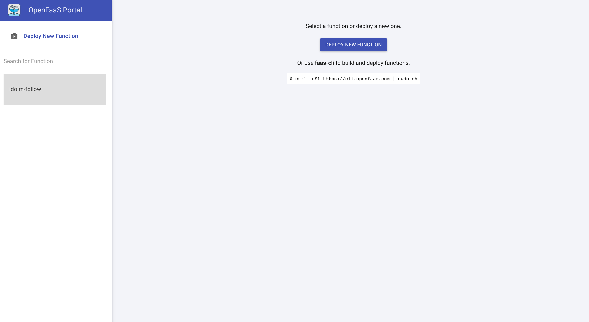
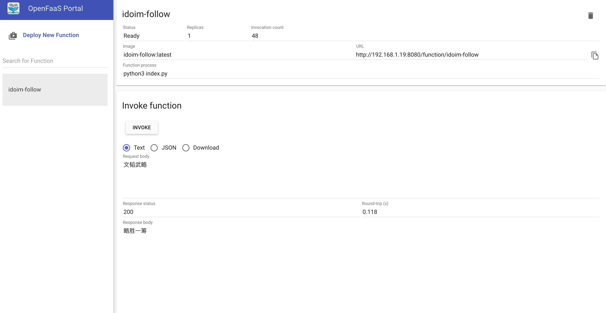

Deploy a python demo in OpenFaas
After a try in OpenFaas, here I make a effort to deploy my own function via OpenFaas.
A few days ago, I played Chinese string up puzzle in QQ with a robot named xiaobing. An interesting thought came to mind that whether I could write such a function service which can help me figure the next idiom in the puzzle. So I got to write my python function about the game.
Collect and Pre-processing
First, I found some words in Github repo. And I make pre-process on the data to help easy get the next idoim.
Pre-process.py
1 | with open("idioms.json","r") as f: |
Then you could find that the pre-processed data. You can find the idoim with its first character.
idioms_dict.json
1 | { |
Write the python function
To implement the Chinese string up puzzle, I write a little demo.
1 | import json |
Notice:
Here why I use the path
./function/idioms_dict.jsonis that in OpenFaas, after you deploy your function, the files in the handler folder will be placed in./function. So I need to get access to./functionto get myidioms_dict.json.
Deploy the python function
After working with the function, I modify the yml file.
idoim-follow.yml
1 | version: 1.0 |
Now all work about coding have been finished yet. It’s so easy, isn’t it? See more detail in my GitHub repo.
Let’s start to make it deploy.
1 | faas-cli build -f idoim-follow.yml &&\ |
Wait a second to build the image, and you can see a function deployed in the OpenFaas Portal.

Play with my own function
Try to check whether the function work well.

Amazing！Now I can get the next idoim just by typing the question idoim and invoking the function~
Moreover, I’m going to play Chinese string up puzzle with xiaobing again, and I’m determined to defeat her this time. LOL.


评论加载中